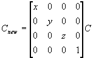

#include <nitro/gx/g3imm.h> #include <nitro/gx/g3b.h> #include <nitro/gx/g3c.h> void G3_Scale(fx32 x, fx32 y, fx32 z);// Below are APIs for creating the display list (command list)void G3B_Scale(GXDLInfo* info, fx32 x, fx32 y, fx32 z);void G3C_Scale(GXDLInfo* info, fx32 x, fx32 y, fx32 z);void G3BS_Scale(GXDLInfo* info, fx32 x, fx32 y, fx32 z);void G3CS_Scale(GXDLInfo* info, fx32 x, fx32 y, fx32 z);
| info | Command List Information |
| x | The scale factor along the x-axis. |
| y | The scale factor along the y-axis. |
| z | The scale factor along the z-axis. |
None.
This function premultiplies the current matrix by the scale matrix. Each element of the matrix is a signed fixed-point number (sign + 19-bit integer + 12-bit decimal). If the current matrix is C, then the new current matrix, Cnew is in the following format.

Even when Position-Vector simultaneous set mode is specified by the matrix mode command, the G3_Scale command multiplication applies only to the position coordinate matrix. This is to prevent changing the lighting effect by changing the direction or length of vector if applied to the directional vector matrix.
G3*_MtxMode, G3*_Identity, G3*_LoadMtx43, G3*_LoadMtx44, G3*_MultMtx43, G3*_MultMtx44, G3*_MultMtx33, G3*_PushMtx, G3*_PopMtx, G3*_StoreMtx, G3*_RestoreMtx, G3*_Translate
01/19/2004 Initial version
CONFIDENTIAL